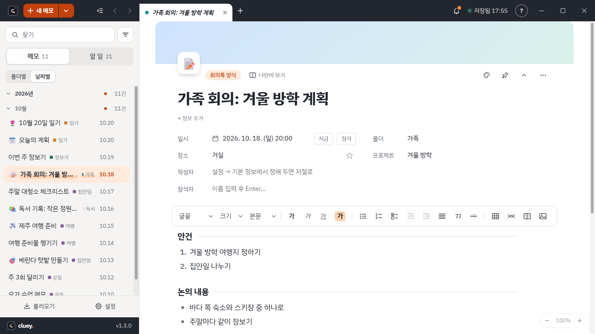

메모 프로그램은 저마다 잘하는 일이 다릅니다. Cluey 는 윈도우 PC 에서 가볍게 켜서 적는 일에 맞췄습니다. 아래 표에서 확인 필요 는 공식 안내에서 확인하지 못한 칸입니다. 짐작해서 적지 않았습니다. 요금과 기능은 회사가 바꿀 수 있으니 고르기 전에 공식 안내를 한 번 더 보세요.
| 항목 | Cluey | Windows 메모장 | Microsoft OneNote | Notion | Evernote |
|---|---|---|---|---|---|
| 어디서 쓰나 | Windows 설치형 (웹 · 휴대폰 앱은 없음) | Windows 기본 앱 | Windows 앱을 무료로 설치할 수 있음 | 웹 · 데스크톱 · 모바일 앱 | Windows · 맥 앱, 웹 |
| 인터넷 없이 | 됨. 켜고 쓰고 저장하고 검색 모두 | 확인 필요 | 확인 필요 | 데스크톱 · 모바일 앱에서 페이지마다 오프라인으로 켤 수 있음. 웹 브라우저에서는 안 됨 | 공식 블로그에 오프라인 안내가 있으나 요금제별 범위는 확인 필요 |
| 무료 범위 | 모든 기능 무료 | Windows 에 포함. AI 쓰기 기능은 Microsoft 계정 로그인이 필요하고, Copilot+ PC 에서는 구독 없이 쓸 수 있다고 안내 (영어만) | 앱은 구독 없이 설치 · 업데이트 가능. 저장 용량은 확인 필요 | 무료 요금제 있음. 파일 업로드 5MB, 페이지 기록 7일, Notion AI 는 체험판 | 무료는 메모 50개 · 노트북 1개, 한 번에 한 기기 |
| 한국어 회의록 양식 | 회의록 · 주간업무 등 양식 14개 기본 제공 | 확인 필요 | 내장 페이지 서식에 회의 메모가 있음. 한국어 서식 여부는 확인 필요 | 한국어 화면 지원. 인기 서식을 한국어로 옮겼다는 2020년 안내가 있음 | 서식 갤러리에 회의록 서식이 있음. 한국어 여부는 확인 필요 |
| 할 일 모으기 | 메모 속 할 일이 한곳에 모이고 기한 알림 | 확인 필요 | 확인 필요 | 데이터베이스로 할 일 관리 (무료 요금제에 데이터베이스 포함) | 할 일 만들기는 무료. 기한 · 반복 · 알림은 유료 요금제 |
| 스티커 메모 | 있음. 색 7가지, 항상 위 | 확인 필요 | 별도 Sticky Notes 앱이 있고 Microsoft 계정으로 동기화 | 확인 필요 | 확인 필요 |
| 메모별 잠금 | 메모마다 비밀번호로 암호화, 운영자도 열 수 없음 | 확인 필요 | 섹션 단위 비밀번호. 페이지나 노트북 단위는 안 됨 | 확인 필요 | 선택한 글자를 암호문으로 바꾸는 방식. 파일, 표 등은 안 됨 |
| 공유 | 폴더 공유. 사람마다 보기만 · 고치기 (로그인 필요) | 확인 필요 | 확인 필요 | 게스트 10명까지 무료 요금제에서 가능 | 확인 필요 |
| AI 연결 (MCP) | 내 PC 안의 Claude · Codex 연결. 읽기와 새 메모만 | AI 쓰기 기능(Rewrite 등)이 있음. 외부 AI 도구 연결은 확인 필요 | 확인 필요 | 공식 호스팅 MCP 서버 제공 | 확인 필요 |
Cluey 가 맞는 경우, 아닌 경우
잘 맞는 경우
윈도우 PC 에서 켜자마자 적고 싶을 때, 인터넷이 없어도 써야 할 때, 메모마다 비밀번호를 걸고 싶을 때, 쓰던 메모를 AI 도구로 정리하고 싶을 때.
다른 도구가 나은 경우
맥이나 휴대폰에서도 같은 메모를 열어야 할 때, 웹 브라우저에서 바로 열어야 할 때. Cluey 는 지금 윈도우 전용입니다.
